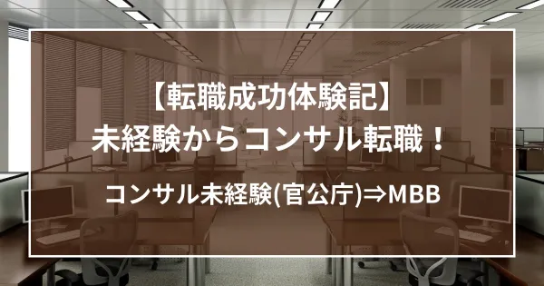

【体験記】コンサル未経験（官公庁）からMBBに内定！

ステラキャリアズ広報室より、弊社の支援で転職成功された方の体験記をご紹介します。
今回は、20代のT/Uさん。
コンサル業界に憧れて、未経験で転職活動に挑戦。いくつかの人材紹介会社を利用するものの、面接対策などの支援に不足感を感じていました。T/Uさんが未経験からの転職成功できた成功の秘訣は、どこにあったのでしょうか。コンサル業界を目指す方、必見です↓↓↓
ステラキャリアズとの出会い
コンサル業界に絞って就職活動を行っており、就職活動の当初は別の仲介会社を使用していました。当時使用していた会社はケース対策をあまり行ってもらえず、一度模擬面接を行ってもらったものの大した指摘ももらえず、面接に対して大きな不安を抱えていました。そんな中、マッキンゼーに所属している友人から村木さんを紹介いただき面接対策を行っていただくこととなりました。
特にお世話になったところ
ステラキャリアズを利用させていただいて良かったと思う点が大きく三つあります。一つ目は、コンサル業界という少し特殊な業界、キャリアパスの前提の元、進路について的確なアドバイスをいただけること。二つ目は、フェルミ推定やケース面接で会社側が何を測ろうとしているのかという視点を持って、良い点も悪い点も指導いただけること。三つ目は、オンラインサロンにて、同じように転職を目指す仲間と切磋琢磨できること。この三つが大きかったです。
進路へのアドバイス
私自身が戦略コンサル業界とは全く関係ない仕事をしていたので、そもそも業界の内情をよく知っていませんでした。コンサル業界は転職を繰り返してキャリアアップを果たすことが多い業界であり、時にはどこに所属するかではなく、何を為すかという点が求められる業界だと感じました。その点から考えると、希望する会社に今は入れなくても、他のコンサル会社で経験を積んでから再び転職するという選択肢もあると思います。内情を知っている村木さんからは、その観点から志望すべき、おすすめの会社も教えてもらいました。
面接対策
面接対策は本当に丁寧にやっていただけました。私が一番利用させていただいたといっても過言ではないほどに練習に付き合っていただきました。印象に残ったアドバイスとしては「フェルミ推定等において面接官側は、おそらく計算結果は見ていない。思考過程や説明の論理構成を見ている」というものです。初めは私も半信半疑だったのですが、面接をこなしていくとまさにその通りで、計算結果は、あまりに素っ頓狂な数字でなければ突っ込まれることはなく、それよりも「なぜそのような場合わけをしたのか」「なぜこの要素を計算にいれなかったのか」ということを詰められていました。的確なアドバイスの元で確かに成長できたと実感しています。
切磋琢磨できる仲間 (オンラインサロン)
毎週zoomで同じ立場にいる転職志望の人たちとケース面接対策を行っていました。時には村木さんがいない時もありました。フェルミ推定やケース面接の模擬面接を行い、そこで自分にない視点を指摘されると、悔しさと同時に感心も感じたりで、良い刺激になりました。転職活動というのは、相談できる人間も限られているケースもままあると思います。そんな中、このような仲間と一緒に対策できることは、モチベーションが向上しますし、孤独感も和らぐものだと思います。
最後に
私は色々な仲介会社を利用したので特に実感しているのですが、会社によってサポートの仕方は大きく異なります。また会社の中でも担当につく人でも変わると思います。そんな中、村木さんには親身に相談に乗っていただき、良い点も悪い点もきっちりアドバイスしていただきました。このアドバイスで確かに内定に結びついたと思っています。
Go back to Insight